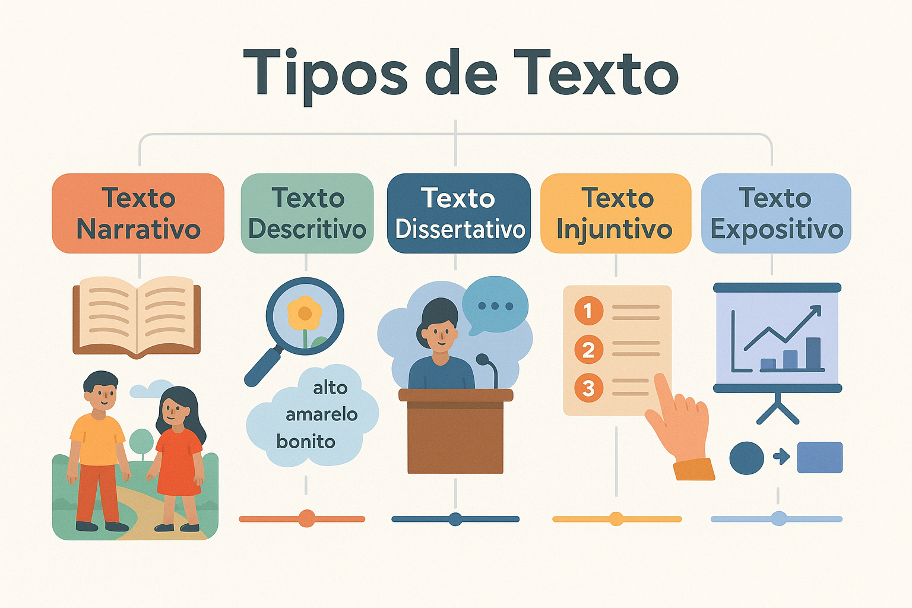

Identificação de Tipos de Texto: narrativo, descritivo, dissertativo, injuntivo e expositivo no ENEM e concursos
Saber reconhecer a tipologia textual é uma das competências basilares da interpretação de texto. Em provas como o ENEM, o PAES UEMA, a FUVEST e concursos públicos em geral, as bancas raramente pedem que você apenas rotule um texto; elas exigem que você compreenda como a estrutura linguística serve à intenção comunicativa do autor.
O maior erro de quem presta prova é confundir tipo textual com gênero textual ou tentar enquadrar um texto longo em uma categoria pura e estanque. Na prática, quase todo texto real é heterogêneo: uma crônica pode narrar um fato enquanto descreve minuciosamente uma cena e reflete dissertativamente sobre a vida. O segredo para gabaritar essas questões está em localizar a predominância tipológica e as pistas gramaticais deixadas pelo autor.
Neste guia completo, você entenderá a diferença crucial entre tipo e gênero, dominará as marcas gramaticais dos 5 tipos clássicos, aprenderá como as principais bancas cobram o assunto e testará seus conhecimentos em nosso quiz avançado com gabarito comentado.

1. A Diferença Fundamental: Tipo Textual vs. Gênero Textual
Antes de analisar os tipos, é obrigatório desarmar a armadilha conceitual mais explorada pelos examinadores. Os linguistas (como Luiz Antônio Marcuschi) distinguem essas duas noções com clareza:
Tipo Textual (Estrutura formal / Modo de dizer)
Diz respeito à natureza linguística e gramatical da composição. Os tipos formam um conjunto restrito e finito (geralmente cinco: narração, descrição, dissertação, injunção e exposição). Eles são definidos por traços sintáticos internos, como classes de palavras predominantes, tempos verbais e relações lógicas entre os enunciados.
Gênero Textual (Função social / Prática de uso)
Diz respeito à função comunicativa no cotidiano e à situação discursiva em que o texto circula. Os gêneros são inumeráveis, flexíveis e mutáveis: e-mail, meme, receita de bolo, editorial, bula de remédio, romance, ata de reunião e crônica são gêneros. Um mesmo gênero pode abrigar múltiplos tipos textuais.
Dica de Prova: Gênero realiza, Tipo estrutura!
Guarde esta relação: o gênero é o veículo social; o tipo textual é o motor gramatical. Se o comando da questão perguntar sobre o "gênero", pense na esfera social e no formato (ex.: notícia, fábula, manual). Se perguntar sobre o "tipo textual", olhe para a gramática e para o objetivo estrutural básico (narrar ações no tempo, descrever estados no espaço, convencer por teses, instruir condutas ou expor conceitos).
2. Anatomia dos 5 Tipos Textuais
Cada tipo textual possui um propósito central que molda a organização frasal e o vocabulário:
Características operacionais de cada tipo:
- 1. Narrativo (Ação e progressão temporal): Relata uma transformação de estado envolvendo personagens em um recorte de tempo e espaço. O eixo central é a sucessão cronológica (o que acontece antes e depois). Há narrador (em 1ª ou 3ª pessoa), enredo, conflito e clímax.
- 2. Descritivo (Pausa temporal e espacialidade): Caracteriza um objeto, pessoa, ambiente, sentimento ou paisagem a partir de impressões sensoriais (visão, olfato, audição, tato). O tempo narrativo fica "congelado"; em vez de uma sequência de ações dinâmicas, o foco reside em atributos, detalhes e simultaneidade.
- 3. Dissertativo-Argumentativo (Defesa de ponto de vista): Apresenta uma tese sobre um tema social, filosófico ou científico e mobiliza argumentos, dados, comparações e silogismos para persuadir o leitor. É o padrão cobrado na redação do ENEM e dos grandes vestibulares.
- 4. Expositivo / Informativo (Apresentação neutra de saberes): Explica, esclarece ou sintetiza um conceito, teoria, dado ou fato sem o objetivo deliberado de defender uma tese pessoal ou convencer por juízo de valor. Busca a clareza, a precisão terminológica e a imparcialidade aparente.
- 5. Injuntivo / Instrucional (Comando e orientação de conduta): Tem como finalidade guiar, instruir, prescrever ou ordenar o comportamento do interlocutor. Estabelece uma relação direta com quem lê, dizendo-lhe passo a passo o que fazer para atingir um resultado.
3. Marcas Linguísticas e Gramaticais da Tipologia
As bancas de concurso e vestibulares não esperam que você "adivinhe" o tipo textual pelo tema; elas cobram o reconhecimento das marcas linguísticas de superfície. Preste atenção aos verbos e classes de palavras dominantes:
| Tipo Textual | Finalidade Central | Marcas Gramaticais Dominantes | Exemplos de Gêneros Onde Predomina |
|---|---|---|---|
| Narrativo | Relatar fatos e transformações de estado no tempo. | Verbos de ação no pretérito perfeito e imperfeito; conectivos temporais (em seguida, logo após, quando, enquanto). | Conto, crônica, romance, fábula, anedota, biografia. |
| Descritivo | Retratar seres, cenários ou sensações com detalhamento. | Abundância de adjetivos e locuções adjetivas; verbos de ligação e de estado (ser, estar, parecer, permanecer); tempo verbal imperfeito ou presente. | Laudo pericial, retrato verbal, cardápio, folheto turístico, guia de identificação. |
| Dissertativo-Argumentativo | Defender uma tese mediante raciocínio persuasivo. | Operadores argumentativos e conjunções subordinativas lógicas (portanto, haja vista que, contudo, por conseguinte); modalizadores valorativos (inaceitável, urgente, imprescindível). | Artigo de opinião, editorial, redação escolar, dissertação acadêmica, manifesto. |
| Expositivo | Apresentar dados, noções teóricas ou definições com objetividade. | Verbos no presente do indicativo com valor atemporal ou científico; vocabulário técnico/especializado; impessoalidade (3ª pessoa e voz passiva). | Verbete de dicionário/enciclopédia, seminário científico, resumo acadêmico, infográfico técnico. |
| Injuntivo | Induzir ou coordenar a ação do leitor. | Verbos no modo imperativo (faça, aperte), no infinitivo (misturar, aplicar) ou locuções de dever/obrigatoriedade (deve-se, é preciso). | Manual de instruções, bula de remédio, receita culinária, edital de concurso, tutorial. |
Como o mesmo tema varia conforme o tipo textual (Exemplo: "A Dengue"):
Narrativo: "Naquela terça-feira ensolarada, Marcos sentiu as primeiras dores no corpo. Deitou-se sob o cobertor, mas a febre logo subiu implacável..." (foco na ação temporal do personagem).
Descritivo: "O mosquito media menos de um centímetro, exibia listras brancas nítidas no abdômen escuro e asas translúcidas quase imperceptíveis..." (foco nos detalhes sensoriais e atributos físicos).
Dissertativo: "A proliferação da dengue reflete a gritante negligência estatal no saneamento básico, sendo inadmissível responsabilizar unicamente os moradores pelas epidemias..." (foco na tese, juízo crítico e defesa de tese).
Expositivo: "A dengue é uma infecção viral transmitida pela picada da fêmea do mosquito Aedes aegypti, que incuba o vírus por períodos de quatro a dez dias..." (foco na definição técnica e informação conceitual neutra).
Injuntivo: "Elimine qualquer água parada em vasos de plantas, vede bem as caixas-d'água e descarte pneus velhos em locais cobertos..." (foco na prescrição de comportamentos e comandos ao leitor).
4. Heterogeneidade Tipológica: a Regra da Predominância
Textos reais quase nunca pertencem 100% a um único tipo. Eles são compostos por sequências tipológicas entrelaçadas.
Pense em um romance realista de Machado de Assis: a obra é classificada como do tipo narrativo porque o macro-objetivo é contar a trajetória de personagens ao longo do tempo. No entanto, o narrador frequentemente interrompe o enredo durante páginas inteiras para fazer a descrição física de um cômodo ou tecer reflexões dissertativas e irônicas sobre a alma humana.
Atenção aos comandos de prova: "predominante" vs. "recurso secundário"
Quando o enunciado disser "No texto lido, constata-se a predominância do tipo...", você deve olhar para o objetivo global da peça inteira, e não para um parágrafo isolado. Se o comando disser "No terceiro parágrafo, o autor recorre à tipologia...", analise estritamente o trecho recortado, pois ali pode haver uma sequência descritiva a serviço de uma narrativa maior.
5. Como a Tipologia Textual cai nas Bancas
O perfil das principais bancas avaliadoras:
ENEM: Relaciona o tipo textual à função social e ao público-alvo (Matriz de Referência, Competência 1 e Habilidades 1 a 4). Cobra com frequência textos injuntivos de campanhas comunitárias ou textos dissertativos mascarados de crônicas reflexivas.
Vestibulares Tradicionais (PAES UEMA, FUVEST, UNICAMP): Analisam as escolhas gramaticais. As questões costumam pedir a correlação entre o tempo verbal (como o uso do pretérito imperfeito para criar ambientação descritiva) e o sentido pretendido na obra literária.
Concursos Públicos (Cebraspe, FGV, Vunesp, FCC): Focam fortemente na distinção entre dissertativo-argumentativo (opinativo) e dissertativo-expositivo (puramente informativo), além de explorar a identificação de sequências injuntivas em normas e decretos.
Quiz sobre Tipos de Texto
Questões de fixação — Nível Avançado
Questão 1 — (ENEM/Vestibulares) Considere a diferença conceitual entre "tipo textual" e "gênero textual". Assinale a afirmativa teoricamente correta:
Questão 2 — Leia o fragmento extraído de um romance: "A casa erguia-se solitária no topo da colina. As janelas de mogno carcomido rangiam ao vento sul, e as paredes exibiam manchas verdes de umidade antiga que desenhavam mapas fantasmagóricos."
Apesar de constar em uma obra literária de ficção, a sequência destacada caracteriza-se tipologicamente como:
Questão 3 — Leia: "A biosfera marinha abriga mais de duzentas mil espécies catalogadas. Estima-se que os ecossistemas bentônicos absorvam até 30% das emissões antrópicas de dióxido de carbono por ano, funcionando como reguladores fundamentais do ciclo termodinâmico global."
Quanto ao tipo textual, esse fragmento é:
Questão 4 — Observe o trecho: "Não é tolerável que o poder público continue omisso diante da precarização das linhas férreas metropolitanas. É inadmissível normalizar o colapso diário da dignidade do trabalhador, fruto exclusivo da ineficiência administrativa."
O autor recorre prioritariamente ao tipo textual:
Questão 5 — Em manuais de instrução, bulas de medicamento e tutoriais digitais, observa-se o predomínio do tipo textual injuntivo. A principal marca morfossintática que denuncia esse tipo é:
Questão 6 — Leia o trecho: "A moça calçou as botas rapidamente, conferiu o fardo nas costas e rompeu o nevoeiro da estrada. Ao dobrar a esquina da capela, entretanto, deparou-se com o portão trancado a correntes."
O fator linguístico determinante para classificar a sequência como narrativa é:
Questão 7 — (Foco: Concursos Públicos) A diferença primordial entre o tipo dissertativo-argumentativo e o tipo dissertativo-expositivo reside no fato de que:
Questão 8 — Leia uma campanha publicitária comunitária: "Vacine seu filho contra o sarampo neste sábado. Compareça ao posto de saúde mais próximo e leve a caderneta de vacinação."
Nesse gênero, a opção pelo tipo textual injuntivo atende à função comunicativa de:
Questão 9 — (Vestibulares / PAES UEMA) Em textos narrativos clássicos, os autores frequentemente intercalam trechos descritivos. Do ponto de vista da arquitetura textual, essa inserção tem a finalidade de:
Questão 10 — Considere a frase: "A inflação acumulada de 4,2% no último trimestre desacelerou os investimentos produtivos."
Se um redator quisesse converter esse enunciado eminentemente expositivo em um enunciado dissertativo-argumentativo, a reformulação adequada seria:
Resumo: guia rápido de tipos textuais
- Narrativo: Verbos de ação no pretérito, sucessão cronológica, personagens, tempo e espaço.
- Descritivo: Pausa temporal, predominância de adjetivos e impressões sensoriais, foco nos detalhes de seres e cenários.
- Dissertativo-Argumentativo: Defesa de ponto de vista (tese) por meio de argumentos, dados e operadores lógicos de persuasão.
- Expositivo: Apresentação clara, neutra e técnica de conceitos, sem julgamento moral ou tentativa deliberada de convencimento.
- Injuntivo: Verbos no imperativo e locuções orientadoras que prescrevem ações ao leitor.
Conclusão
Dominar a identificação dos tipos de texto não serve apenas para resolver questões de múltipla escolha; é a chave para ler com profundidade e antecipar o que o autor está construindo. Ao se deparar com qualquer questão de prova, identifique primeiro se o texto busca narrar uma história, descrever um cenário, defender uma tese, explicar um conceito ou induzir uma conduta. Essa distinção inicial economizará tempo precioso e evitará as habituais pegadinhas das bancas.
Perguntas frequentes sobre Tipos de Texto
Qual é a diferença exata entre Tipo Textual e Gênero Textual?
O tipo textual é a estrutura linguística e gramatical interna (como os tempos verbais e as classes de palavras) e resume-se a cerca de cinco modos básicos: narrativo, descritivo, dissertativo, expositivo e injuntivo. O gênero textual é a materialização concreta e social dessa linguagem em nosso dia a dia (notícia, meme, carta aberta, bula de remédio, romance, ata de reunião).
Um texto pode ter mais de um tipo textual ao mesmo tempo?
Sim. Quase todos os textos reais são heterogêneos. Uma notícia, por exemplo, é predominantemente expositiva e narrativa, mas pode conter trechos descritivos. As provas sempre avaliam a predominância tipológica, isto é, o objetivo discursivo que comanda o conjunto do texto.
Qual a diferença entre dissertação expositiva e dissertação argumentativa?
A dissertação expositiva foca na transmissão objetiva e impessoal de dados ou teorias, sem tomar partido. A dissertação argumentativa é construída para convencer o leitor a respeito de uma tese controversa, recorrendo a operadores lógicos e modalizadores valorativos de opinião.
Receita de bolo e manual de aparelho são que tipo de texto?
Pertencem predominantemente ao tipo injuntivo (ou instrucional), pois são estruturados por meio de verbos no imperativo ou no infinitivo ("misture", "aperte", "ligar") para coordenar as ações práticas do leitor.
Continue aperfeiçoando sua leitura crítica
- Como identificar a ideia principal de um texto: técnicas para provas
- Inferências na Interpretação Textual: como identificar informações implícitas
- Como interpretar notícias e reportagens: diferenciando fato de opinião
- Como interpretar editoriais e artigos de opinião: estratégias para o ENEM e concursos
- Diferença entre Tema, Assunto e Tese: entenda os conceitos da redação
Referências
- BAKHTIN, Mikhail. Os gêneros do discurso. São Paulo: Editora 34.
- KOCH, Ingedore Villaça; ELIAS, Vanda Maria. Ler e compreender: os sentidos do texto. São Paulo: Contexto.
- MARCUSCHI, Luiz Antônio. Produção textual, análise de gêneros e compreensão. São Paulo: Parábola Editorial.
- TRAVAGLIA, Luiz Carlos. Gramática e interação: uma proposta para o ensino de gramática. São Paulo: Cortez.
Explore Outros Conteúdos
Continue seus estudos acessando outras seções do site Mestre Kira: